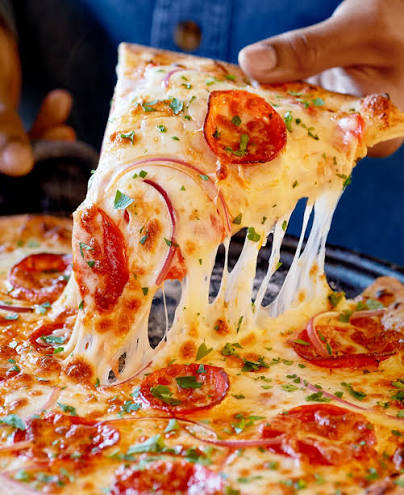

Pizza is a dish of Italian origin consisting of a usually round, flat base of leavened wheat-based dough topped with tomatoes, cheese, and often various other ingredients, which is then baked at a high temperature, traditionally in a wood-fired oven. A small pizza is sometimes called a pizzetta. A person who makes pizza is known as a pizzaiolo.
Pizza[a] is an Italian dish typically consisting of a flat base of leavened wheat-based dough topped with tomato, cheese, and other ingredients, baked at a high temperature, traditionally in a wood-fired oven. The term pizza was first recorded in AD 997, in a Latin manuscript from the southern Italian town of Gaeta, in Lazio, on the border with Campania.[2] Raffaele Esposito is often credited with creating the modern version of pizza in Naples at the end of the 19th century.[3][4][5][6] In 2009, Neapolitan pizza[7] was registered with the European Union as a traditional speciality guaranteed (TSG) dish. In 2017, the art of making Neapolitan pizza was included on UNESCO's list of intangible cultural heritage.[8]